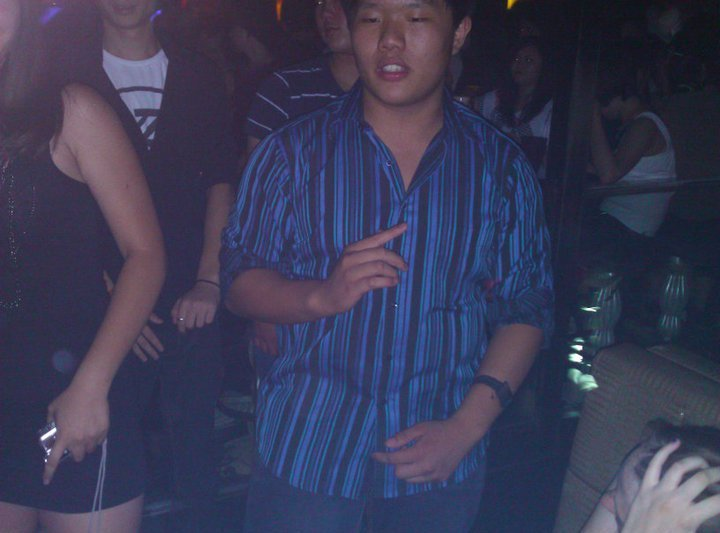
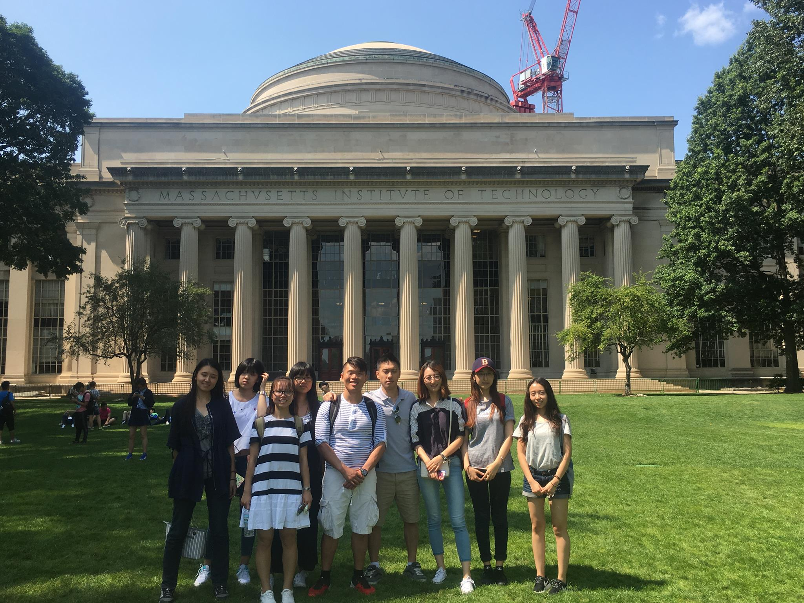
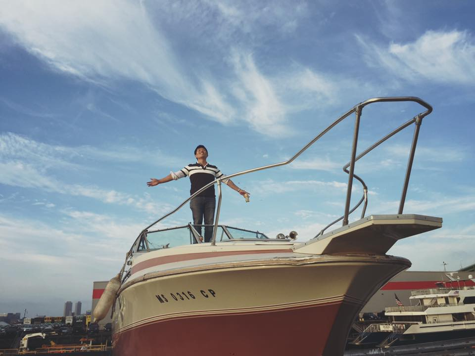

Jackson Huang
A Glimpse
I am a: third-culture kid, failed ex-entrepreneur, a grateful son, and global nomad. My education start-up didn't succeed so now I'm on a journey to become a better me, one day at a time.
See for yourselfMy Journey So Far
2010-2016: The Wild, Wild, East
I was born in Guangzhou but, at age 5, I immigrated to Vancouver. After spending 7 years there, I moved back to Beijing where I attended international school.
At the time, Beijing was in a phase of rapid development and life felt quite wild. The laws were laxed and therefore my crazy group of friends had many extreme adventures together.
2016-2018: The CYBF Vision
After spending a full year in college, I grew bored anddisillusioned with college life and wanted to do something more . It was during that period where an old friend of mine approached with the opportunity to start a company in the education industry. Being the naive and egotistical kid that I was (and still am) I pounced at it and took a gap semester to launch my venture. It was a crazy experience: traveling to three cities within 12 hours, visiting every single Beijing major university campus and 'pretending to be a lost student' to sell programs, managing people almost twice my age, and mentoring students who were older than me.
After a while, we expanded to Shanghai and pivoted from selling summer study programs for Chinese university studetns to running high school innovation competitions. Seeing kids so motivated, so inspired and so passionate about something I conceived while taking a shower - it melted my heart. I was happy, I was settled, I thought that was the path of life that I would take - my end. Then, I found out that I was simply a pawn to be used for my family's money. I loss more than 100k USD, and found out that my entire journey was a life. That lead to a series of decisions that has left me here...
Vision 2020: Trust the Process
The failure of my venture and relationship demonstrated to me that I am not yet ready. Although I kept on telling myself that I was all grown-up I was in-fact far from it. When I lost what I thought was everything, I realized that I had gained complete freedom. Freedom to explore, learn new skills, and to grow.
Now I am simply picking up the pieces, sorting through the chaos, exercising with my inner demons, and trying to become a more knowledgeable, self-aware, and happy individual.
Instead of chasing immediate results, its time to trust the process - the process of life.